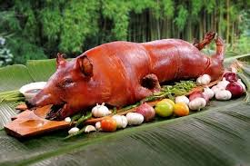

Visayan cuisine is deeply rooted in the history and culture of the Visayas region, which comprises several islands in the central part of the Philippines. The Visayas is geographically located between Luzon in the north and Mindanao in the south, making it a melting pot of various influences from different Filipino regions, as well as from foreign cultures. The region's history of trade, colonization, and migration has shaped its diverse culinary traditions, which are characterized by the use of local ingredients, simple yet bold flavors, and distinct cooking techniques.
When the Spanish arrived in the Philippines in the 16th century, they introduced new cooking techniques and ingredients, such as beef, pork, and dairy products, which were gradually incorporated into local recipes. The Visayan region became a key center for Spanish influence, particularly in terms of food, with dishes like Lechon (roast pig) and Morcon (a meat roll) becoming staples in festive gatherings. Spanish colonizers also introduced a variety of herbs and spices that would become integral to Visayan cooking, such as garlic, onions, and bay leaves.
Visayan cuisine, often overshadowed by the more globally recognized fare from Luzon, is a hidden gem in the Filipino culinary landscape. With its bold flavors, rich history, and reliance on fresh, local ingredients, Visayan food offers a sensory adventure for anyone willing to explore its culinary depths. From savory dishes that balance sour, sweet, and salty notes to the indulgence of roasted meats and seafood, Visayan cuisine is as diverse as its islands.
When Visayan cuisine is a celebration of the region's agricultural bounty and maritime heritage. From the smoky richness of lechon to the bright, tangy flavors of kinilaw, each dish tells a story of local tradition, creativity, and resourcefulness. The cuisine may not have the same international fame as some other Filipino dishes, but its distinct flavors, humble ingredients, and warm hospitality make it a worthwhile journey for any food lover. Whether you're enjoying a bowl of batchoy in Iloilo or nibbling on sutukil by the shore in Cebu, Visayan cuisine offers a rich and rewarding culinary experience that is as diverse and beautiful as the islands themselves.
a flavourful Filipino dish of native chicken cooked in a flavourful broth with herbs and spices
an exotic soup composed of the bull's sex organs.
is a classic Filipino soup made with coconut juice, papaya, spinach, and lemongras
a hearty soup made with beef shank and marrow, slow-cooked with vegetables such as corn, saba bananas, and sometimes potatoes.
a savory-sweet Filipino braised pork dish, typically made with pork belly or shoulder
a Filipino spring roll filled with heart of palm (ubod), which is the tender inner core of young palm trees.
a traditional Filipino dish made from raw fish, typically tarigue marinated in vinegar or calamansi juice, and mixed with onions, ginger, and chili.
a hearty, flavorful stew made primarily from pork, typically offal such as innards and sometimes pork belly.
a spicy Filipino chicken dish consisting of chicken pieces simmered in a broth made with coconut milk, garlic, onions, ginger, chili.
a soup dish composed of pig liver cooked with ginger, lemongrass, and a variety of vegetables.